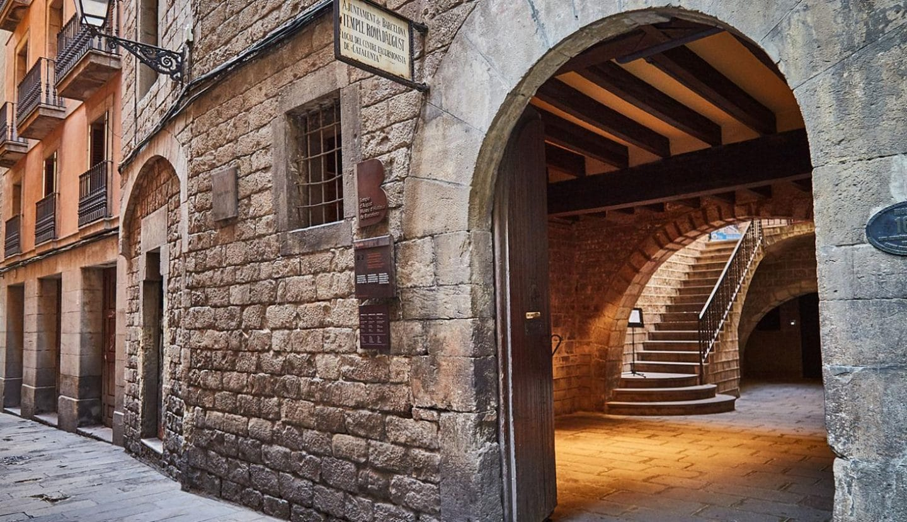

¡ESO ES! EL TEMPLO DE AUGUSTO.
🏛️ Archivos de la Ciudad:
El Templo de Augusto de Barcino se construyó en el siglo I para el culto imperial a César Augusto, quien dio permiso para fundar la colonia de Barcino.
El templo se erigía sobre el Foro, en el actual Barrio Gótico, en el punto más alto del Monte Táber.
¡Encuéntralo para seguir el camino que Lucio nos ha dejado!